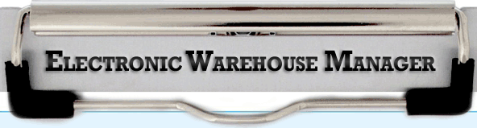

Electronic Warehouse Manager

Contents

The most common errors that occur when running the Electronic Warehouse Manager add-on module.
Causes for a login failure on your Electronic Warehouse Manager tablet:
•Host Not Found.
•Error receiving update from Host.
Description
The Electronic Warehouse Manager module is comprised of three components. If any of these components fail, it can cause the error messages above. This means the EWM client app on the tablet(s) is unable to communicate with the EWM service or GUI application on your computer.
1.The first component is the EWM Service (enelssrv.exe) or GUI application (enelssrvwin.exe). It typically runs on the server but could also be setup to run on a workstation.
2.The second component is the Android tablet(s) that are running the EWM client app.
3.The third is a strong, stable WiFi connection for the tablet to use to connect to the computer running the EWM service or GUI application.
Solution
There are a few different factors that are involved in order for the tablets to communicate properly with the computer that is running the EWM service or GUI application.
We recommend following these steps in the order listed to resolve the problem.
1.Close out of the EWM client app on the tablet(s), restart the EWM service or GUI application, and try logging into the EWM client app on the tablet(s) again.
•If the restart of the EWM service or GUI application is unsuccessful or you are unfamiliar with how to do this, you can restart the computer that is being used to run them instead and this will accomplish the same thing.
If it is running on your server, you will first need to get everyone out of the entrée system. Restarting your server will stop users from being able to use entrée until the server has come back online.
2.If you have successfully restarted the EWM service or GUI application but the tablets are still failing to connect, restart the computer, if you have not done so already, and restart the EWM tablet(s).
•This will refresh their network connection. After the computer and tablet(s) have restarted, ensure that the EWM service or GUI application has started on the computer. Then try to log back into the EWM client app on the tablet(s).
3.If you have multiple EWM tablets, make sure you try logging into them all.
If you have 5 tablets and only 1 tablet is failing to login, this tells us it is an issue with that tablet and not EWM. You will need to look into why this specific tablet is failing to connect.
4.Test your WiFi connection. Ensure that you have a maximum signal strength showing on the tablet for your WiFi connection. Open up Google Chrome on the tablet and try to go to a safe website like www.necs.com. If the page fails to load, or just sits there for a long time before the page loads, then the issue is with your WiFi connection.
•We recommend you restart your network router/switch that controls this WiFi connection, and try to load the same website again. If the website continues to fail, it could be that your network equipment is failing and needs replacing. This will be a direct result as to why EWM will not work on your tablet(s).